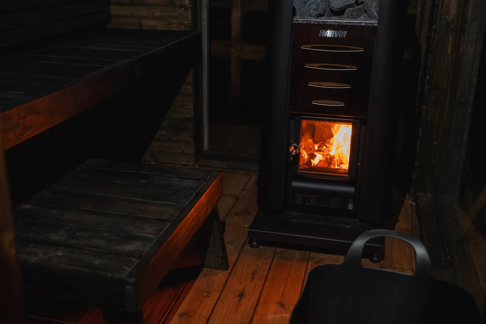
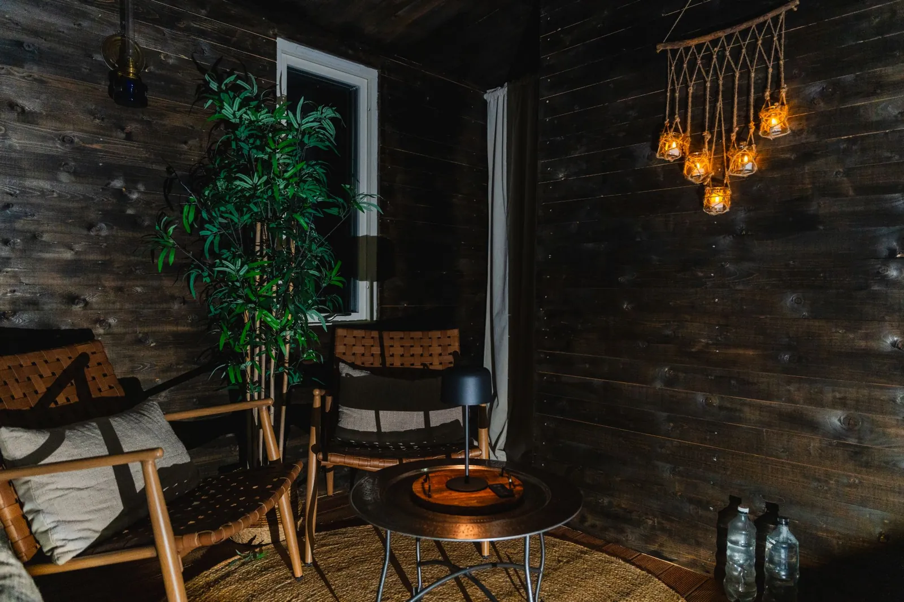

Ett glödande lugn under stjärnhimlen.
Låt skogens tystnad omfamna dig. På Pinebo Palace väntar en vedeldad bastu och ett inbjudande, varmt spabad – tillgängligt för dig under din vistelse. En perfekt förlängning av din återhämtning.

Den vedeldade skogsbastun
Doften av brinnande björkved och det stillsamma knastrandet från kaminen sätter tonen direkt. Bastun är byggd i klassisk nordisk stil, och efter värmen svalkar du dig i den kalla duschen. Här får du verkligen landa i lugnet.
- Plats för upp till 4 personerGott om plats för dig och ditt sällskap – hela gästhuset rymmer max 4 gäster.
- Själveldande upplevelseKänn tillfredsställelsen i att själv tända kaminen. All ved ingår i din bokning.
- Skräddarsydd värmeDu styr temperaturen själv – från mild, mjuk värme till en intensiv, djupgående hetta.

Nedsänkt spabad under bar himmel
Kliv ner i det ångande, 38-gradiga vattnet efter en lång dag av vandring eller bara för att avsluta kvällen på absolut bästa sätt. Placerat på altanen precis utanför stugan får du en panoramavy över stjärnhimlen utan ljusföroreningar.
- Alltid varmt och inbjudandeSpabadet håller en konstant och behaglig temperatur på 38 °C under hela din vistelse.
- Kristallklart vattenMiljövänligt renat vatten som är mjukt mot huden och fritt från starka kemikalier.
- Stämningsfull belysningDiskret LED-belysning i mjuka färger förstärker nattens mystik.

Den enkla vägen till harmoni
Bastu- och badupplevelsen på Pinebo Palace är utformad för att vara okomplicerad och djupt njutbar från start till slut.
-
Förberedelsen
När du anländer finner du kaminen förberedd med torr björkved. Spabadet är redan uppvärmt till perfekta 38 grader och står redo.
-
Uppeldningen
Tänd bastukaminen i din egen takt. Efter cirka 45 minuter har temperaturen nått en behaglig nivå och skogens doft sprider sig.
-
Svalkande dopp
Svalka dig i den kalla duschen eller i altanens friska luft – och kliv sedan ner i det varma spabadet under stjärnorna.
Praktisk information inför ditt bad
Här har vi samlat de vanligaste frågorna gällande bastun och spabadet. Hittar du inte svar på din fråga är du alltid välkommen att kontakta oss direkt.
Ingår handdukar och morgonrockar i tillvalet?
Du kan välja att ta med egna handdukar eller lägga till vårt paket med sängkläder & handdukar (250 kr) vid bokningen. Då ingår även stora sköna badlakan.
Hur mycket ved ingår för bastun?
Det ingår alltid rikligt med torr, fin björkved för hela din bokade period. Skulle du mot förmodan behöva mer finns ett extra förråd tillgängligt på tomten utan extra kostnad.
Hur bokar jag tillvalen och vad kostar det?
Du lägger enkelt till bastu (400 kr/dag) och spabad (från 400 kr) i samband med att du väljer datum i vår bokning. Väljer du att kombinera båda under hela din vistelse dras automatiskt en paketrabatt på 10 %.
Delar jag bastu och spabad med andra gäster?
Nej. Pinebo Palace hyrs ut till ett sällskap i taget, så bastun och spabadet du bokar är bara för er. Vi som värdar bor i ett eget hus på samma gård, men gästhuset och altanen ligger avskilt och vända bort från vårt hus.
Finns det dusch efter bastun?
Ja – svalka dig i den kalla duschen efter bastun. Många gäster tycker att det är extra skönt efter en dag av vandring.
Låt skogens varma lugn vänta på dig.
Välj dina datum, lägg till bastu och bad och njut av ett avskilt gästhus mitt i skogen utanför Ulricehamn. Fri avbokning upp till 14 dagar före ankomst.
Inga dolda bokningsavgifter tillkommer.